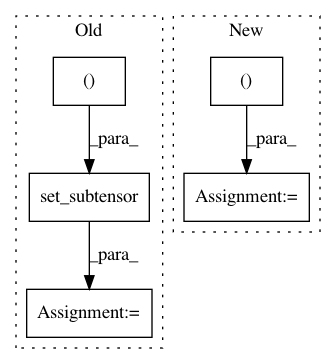

e99414f3ea4021ce2816b44b7db75f42bbb34b41,starry/ops/ops.py,OpsReflected,X,#OpsReflected#Any#Any#Any#Any#Any#Any#Any#Any#Any#Any#,460
Before Change
rTA1Rz = tt.dot(rTA1Rz, A1InvFA1)
// Rotate to the correct phase
X_rot = tt.set_subtensor(
tt.zeros((rows, cols))[i_rot],
self.dotR(rTA1Rz, inc, obl, theta[i_rot])
)
return X_rot
@autocompile(
After Change
tt.zeros_like(norm),
source[:, 0] * norm
)
theta_z = tt.arctan2(source[:, 0], source[:, 1])
rTA1Rz = self.dotRz(rTA1, theta_z)
// Apply limb darkening?
if self.filter:
F = self.F(u, f)
A1InvFA1 = ts.dot(ts.dot(self.A1Inv, F), self.A1)
rTA1Rz = tt.dot(rTA1Rz, A1InvFA1)
// Rotate to the correct phase
X_rot = self.dotR(rTA1Rz, inc, obl, theta)
// TODO: Implement occultations in reflected light
// Throw error if there"s an occultation
X_occ = RaiseValuerErrorIfOp(
In pattern: SUPERPATTERN
Frequency: 3
Non-data size: 5
Instances
Project Name: rodluger/starry
Commit Name: e99414f3ea4021ce2816b44b7db75f42bbb34b41
Time: 2019-06-01
Author: rodluger@gmail.com
File Name: starry/ops/ops.py
Class Name: OpsReflected
Method Name: X
Project Name: senarvi/theanolm
Commit Name: b7a5a410c527c3642d58aaba11d1aadc62bd918a
Time: 2016-11-24
Author: seppo.git@marjaniemi.com
File Name: theanolm/network/samplingoutputlayer.py
Class Name: SamplingOutputLayer
Method Name: _compute_sample_logprobs
Project Name: keras-team/keras
Commit Name: 62392a4b5e92ad5a6aefbc2d1379c7423437ff07
Time: 2015-06-25
Author: xavier@whirlscape.com
File Name: keras/layers/embeddings.py
Class Name: Embedding
Method Name: __init__